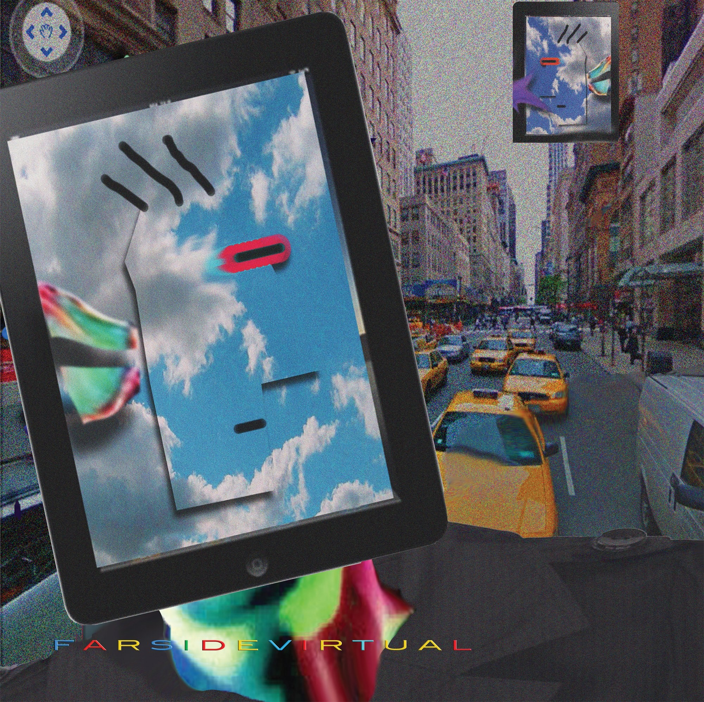

Vaporwave Corner
Vaporwave is a niche genre of electronic music that distinguished itself from the rest of the chillwave section. Its uniqueness comes from the iconic visual aesthetic it promotes; sometimes, its visual style is more recognizable than the music from which it originated. The pioneers of the genre Ariel Pink and James Ferraro slowed down, Chopped, and screwed different samples of smooth Jazz, ambient street noises, R&B, mall, and lounge music from the 1980s and 1990s. Sometimes Vaporwave’s aesthetics and movement, in general, can be described as a commentary on modern capitalism and the soulless glamour of late-stage capitalism. The goal is to create a sense of nostalgia for an era that most listeners never lived in between the consumerist culture of the 1980s to the optimistic era of the early 2000s.
Feature Artist: James Ferraro

James Ferraro [1]
James Ferraro is a musician, composer, producer, and visual artist. He is known as a prolific artist whose music jumpstarted hypnagogic pop and vaporwave music genres. Whose works often explore the glare problems of our society like climate change and consumer culture. Ferraro’s general interest in music began at a very young main due to his influence from his parents, of which his father was DJ, and his mother was a singer. His career started when he met Spencer Clark, the duo who created the Californian group The Skaters in the early 2000s. During his time at The Skaters, he found his style composed noise and collage sound ranging from mystic lo-fi ethos to new age, alternative R&B, and contemporary classical with a hi-fi touch. David Keenan described Ferraro’s music from The Wire as hypnagogic pop, which invoke memories or nostalgia for 1980s culture. He was thrown into the spotlight when the 2011 album Far Side Virtual was chosen as the Album of the Year by The Wire. His Album is often credited for establishing the roots for the electronic music microgenre known as Vaporware. Despite this honor, Ferraro constantly refuses to be known as the father of this microgenre. Today, he recently dropped a new album called Requiem for Recycled Earth (2019), whose goal is to address the impact of climate change on the world by creating an all-consuming, claustrophobic experience for the listener.
Album: Far Side Virtual
Far Side Virtual [2]
Far Side Virtual is an album by James Ferraro, released in 2011 both digitally and on vinyl. The album is marked as a turning point in Ferraro’s career as an artist since it symbolizes his transition from his previous style, which focuses on lo-fi drone music, towards more aesthetic-oriented music that later evolved into vaporwave. Far Side Virtual deliberately uses corporate-style music, commonly referred to as elevator music, and retro computer sounds to evoke a sense of nostalgia towards the listener. The album was initially inspired when Ferraro began experimenting with phone ringtones to create music. The album tackles the concepts of hyper capitalistic culture from the 1990s and retro-futurism. Critics describe Far Side Virtual as too bleak and pessimistic for the modern world.
Far Side Virtual
| Track | Song |
|---|---|
| 01 | Linden Dollars |
| 02 | Global Lunch |
| 03 | Dubai Dream Tone |
| 04 | Sim |
| 05 | Bags |
| 06 | PIXARnia and the Future of Norman Rockwell |
| 07 | Palm Trees, Wi-Fi and Dream Sushi |
| 08 | Fro Yo and Cellular Bits |
| 09 | Google Poeises |
| 10 | Starbucks, Dr. Seussism, and While Your Mac is Sleeping |
| 11 | Adventures in Green Foot Printing |
| 12 | Dream On |
| 13 | Earth Minutes |
| 14 | Tomorrow's Baby of the Year |
| 15 | Condo Pets |
| 16 | Solar Panel Smile |
Review:
I guess the reason this album is known to be a little bit unsettling is mainly due to the eerie corporate cleanliness of it. It‘s almost like the contrasting music for a dystopian future with a cheerful tone. Also, the track music is reminiscent of when I was younger, and I used to play on my father’s beige gateway computer, and the noises and beats add to that. Overall, the album creates a sense of wonder and frightfulness that few of them make me feel. That’s why I give it a 9/10 score based on my opinion.
| [1] | "James Ferraro". lostmediawiki. 2015. Retrieved 2021-12-06. |
| [2] | "Far Side Virtual". Discogs James Ferraro–Far Side Virtual. 2011. Retrieved 2021-12-06. |